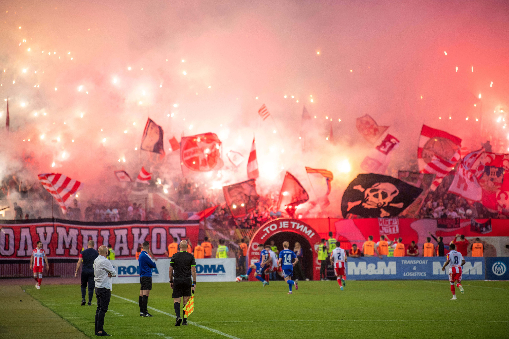
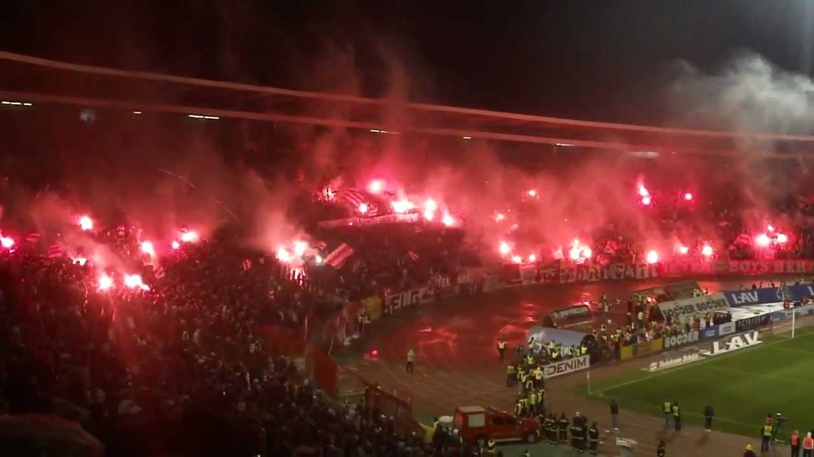
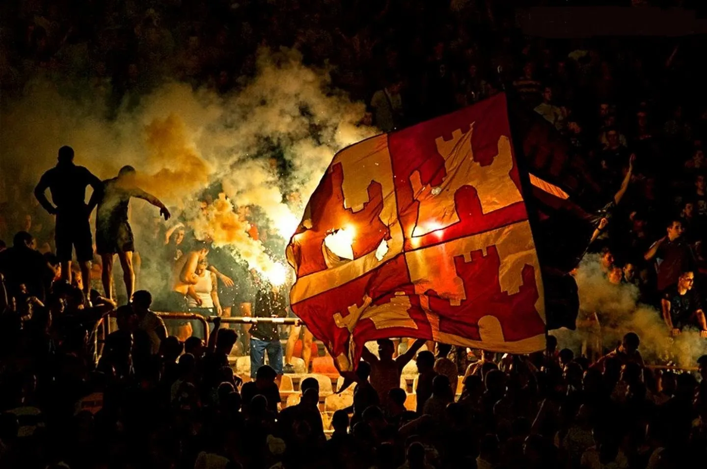

Röda stjärnan

Att besöka "Marakana" i Belgrad är som att kliva in i en annan värld, där den berömda spelargången sätter tonen direkt. Innan spelarna ens ser dagsljuset måste de vandra genom en lång, mörk betongtunnel prydd med graffiti, vaktad av tungt utrustad kravallpolis medan ljudet av tusentals stampande fötter dånar från taket. Denna skräckinjagande inledning är en medveten del av klubbens aura och syftar till att bryta ner motståndarens mentala fokus långt innan matchen har börjat.

Hjärtat i atmosfären är den norra läktaren, Sever, där supportergruppen Delije huserar. De är kända för att vara en av världens mest välorganiserade och hängivna ultrasgrupper, kapabla att skapa enorma pyrotekniska uppvisningar som förvandlar hela arenan till en glödande kittel av röd rök och bengaliska eldar. Deras sång är inte bara hög, den är disciplinerad och aggressiv, vilket skapar en ljudvall som är fysiskt kännbar och som ofta överröstar allt annat i närheten av arenan.

Atmosfären i Belgrad är också djupt färgad av serbisk historia och nationalism, vilket ger matcherna en extra dimension av allvar och intensitet. Rivaliteten med andra Balkan-klubbar och den stolthet man känner över segern i Europacupen 1991 skapar en känsla av att klubben är en stormakt som alltid ska försvaras. Det är en plats där fotbollen blir en arena för att visa styrka och enighet, vilket resulterar i en av de mest fientliga men samtidigt mest elektriska miljöerna i hela idrottsvärlden.